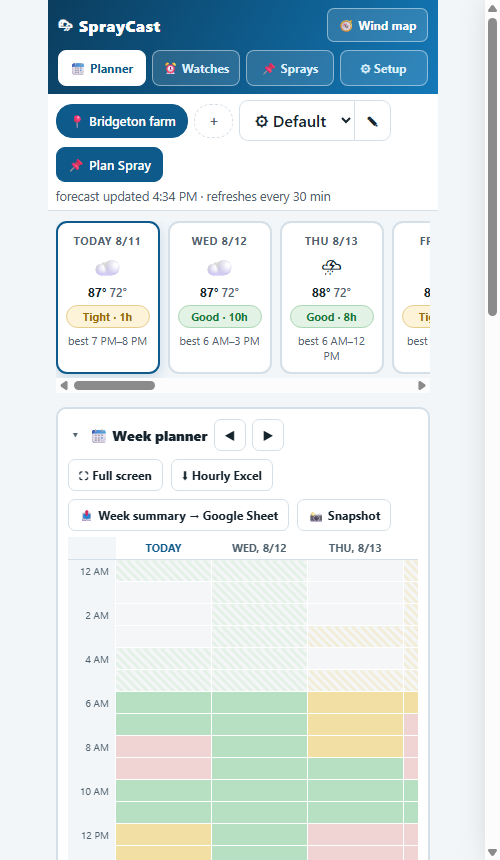
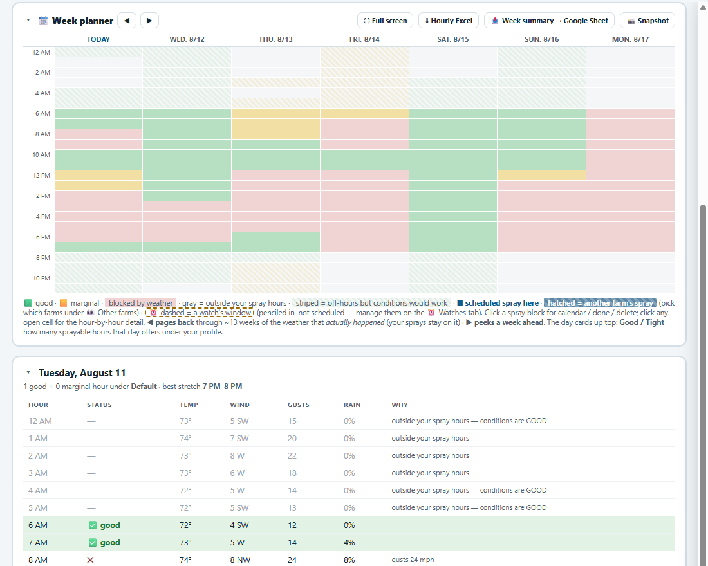

1 · Two-minute start
- Open SprayCast. You land on ⚙ Setup.
- Type your town in Find your town → Search → tap your town. That's the whole setup.
- Tap 📆 Planner. You're looking at two weeks of forecast judged against sensible default limits.

2 · Reading the planner
The day cards
One card per forecast day — swipe sideways for more. The chip is the day's verdict under your active profile: Good · 9h = nine sprayable hours, Tight · 2h = it's going to be a squeeze, No window = don't bother. "best 6 AM–1 PM" is the longest clean stretch. Tap a card for the hour-by-hour table with the reasons (wind 14 mph, rain 60%…).
The week grid

Columns are days, rows are hours:
- green good · amber marginal · red blocked by weather · gray outside your spray hours (striped gray = off-hours but the weather would cooperate if you're forced to spray late).
- Blue blocks are your scheduled sprays — tap one for calendar/done/delete.
- Dashed amber outlines are watch windows (penciled in, not scheduled).
- ◀ pages back through ~13 weeks of the weather that actually happened, with your sprays where you scheduled them — handy for "could we have sprayed last Tuesday?" arguments and records. ▶ peeks a week ahead (treat days 8–14 as a sketch, not a promise).
- ⛶ Full screen shows the whole week at once — on a phone held upright it rotates itself sideways.
- 📸 Snapshot makes a PNG of the grid (with legend and location on it), ready to text the crew.
3 · Profiles — your own spray rules
A profile is what "sprayable" means to you: wind ceiling, gust ceiling, rain-chance limits, temperature range, acceptable wind directions, and your spray hours per weekday (overnight windows like 20:00→04:00 are fine — they run into the next morning). The ✎ next to the profile dropdown manages them.
- Two numbers per limit: e.g. wind "good up to 8, blocked at 12" — between the two is marginal (amber).
- Wind direction: tick the directions you can accept wind FROM (think: what's downwind of the block — a pond, a neighbor, a road). Leave all unticked for "any".
- Make one profile per job if the rules differ — "Herbicide (strict)" vs "Fungicide (relaxed)" — and switch with the dropdown. Every card, grid cell and watch re-judges instantly.
4 · Scheduling a spray (and getting reminded)
- Tap 📌 Plan Spray (top bar) — or tap a good-looking cell in the grid first; the form follows the day you tapped.
- Name it, pick the day and hours (an end earlier than the start = an overnight spray finishing next morning), 💾 Schedule spray.
- On the spray's block or in 📌 Sprays, tap 📅 Calendar — the file carries its own 12-hour and 1-hour reminders into Outlook, Gmail or Apple Calendar. That's how reminders reach you while SprayCast is closed.
5 · Watches — let the app wait for the weather
A watch is a spray you're waiting to make: "Fungicide, block A — needs 4 quiet hours, wind from NW only." Create one on the ⏰ Watches tab. Every forecast refresh, the watch hunts all its locations for the first long-enough window and shows it as Next match; matched windows are penciled onto the grid as dashed outlines.
- 📌 Schedule next to a match turns it into a scheduled spray in two taps (the watch's rules ride along for the drift-watch).
- One-time watches disappear once scheduled; recurring ones keep watching (good for a spray you repeat every couple of weeks).
- Turn on 🔔 Alerts (⚙ Setup) and SprayCast chimes when a watch finds a NEW window — while the page is open.
6 · The wind map
🧭 Wind map (top right) shows your farm on satellite imagery with a live wind-direction arrow — the big arrow flies with the wind, and the shaded cone behind it is where drift goes. Small arrows show the wind field across the whole view.
- Drag to pan, pinch (or +/−) to zoom. The slider scrubs the next 48 hours — watch the wind swing before you pick your window.
- 🎛 Set Wind Manually answers "what if it comes from the south at 10?" without waiting for that forecast.
- If the pin isn't on the actual yard: pan until it's right and tap 📍 Use this map center as my forecast point — the forecast re-fetches for that exact spot.
7 · The Google-Sheet bridge (the full walkthrough)
Optional, but worth the 3 minutes. Once connected, every spray you schedule (and later mark done or delete) appears as a row on a Google Sheet you own — so the crew or the boss sees the plan without ever opening SprayCast. One person sets it up; coworkers who import your backup file write to the same sheet.
Step 1 — make the form
- Go to forms.google.com → blank form. Name it anything ("Spray plan").
- Add seven short-answer questions titled: Date, Start, End, Spray, Location, Notes, Status. (Exact titles don't matter; Date/Time question types also work.)
- Make sure no question is marked Required.
- Settings → Responses → Collect email addresses: OFF, and if you see it, Limit to 1 response: OFF.
- Click Publish (top right). Do not skip this — see the warning below.
Step 2 — get the sheet
In the form's Responses tab, click the green Sheets icon. That spreadsheet is your shared list — share it with the crew like any sheet. Rows land on its "Form Responses" tab.
Step 3 — connect SprayCast
- In the form: ⋮ menu → Get pre-filled link.
- In the pre-filled form, type the marker words
date,start,end,spray,location,notes,statusinto their matching boxes (this is how SprayCast learns which box is which). - Get link → Copy, paste it into ⚙ Setup → 📤 → Connect.
- Press 🧪 Send a test row and check the sheet. If nothing lands, press 🔎 Debug in a tab — it opens the form pre-filled in a real tab where Google will tell you what it doesn't like.
8 · Backups, sharing and your phone
- 🔗 Copy a setup link (⚙ Setup → 💾) — sends your locations and profiles to a colleague as a plain link. They open it, tap OK, and their SprayCast is set up. It never carries your plans, watches or sheet connection.
- ⬇ Export backup — a file with everything (plans and watches included). Import it on a new device to move house, or hand it to a coworker to share the full setup including the sheet connection.
- 📱 Phone warning: iPhone/Safari can clear a site's saved data if you don't open it for a week or two. Export a backup after setup, open the app now and then, and Add to Home Screen — all three help.
- Updates: after a new version ships, your phone shows it on the second full open. The version number in the footer tells you which copy you're looking at.
9 · Questions people actually ask
Where does my data go? Nowhere. No account, no server, no analytics. Everything you enter stays in your browser. The only internet requests are to Open-Meteo (forecast + town search), Esri map tiles (only while the wind map is open), and — only if you connect it — your own Google form. The page's source is public; anyone can check.
Can it alert me when it's closed? No — a page with no server can't push notifications while closed, and we won't pretend otherwise. The honest workarounds: schedule the spray and use the 📅 calendar file (its reminders fire from your calendar app), and make opening SprayCast with coffee a habit.
Where does the forecast come from? Open-Meteo, hourly for your exact coordinates, refreshed every 30 minutes while open. It's a forecast — the label always wins, and look up from the phone before you pull out of the yard.
Two sites in the same town? Save the town twice and give each a ✎ nickname ("Home farm", "Route 49 block"). Each gets its own forecast point — drag the wind map and use 📍 to pin each one to the actual yard.
Shared crews or sprayers between farms? 👀 Other farms (week planner) overlays another location's scheduled sprays on your calendar, hatched blue, so two sites don't book the same rig at the same hour.
It says "Tight · 1h" but yesterday said more? Today's card only counts hours that haven't already passed — mornings "disappear" from Today by afternoon. That's on purpose.